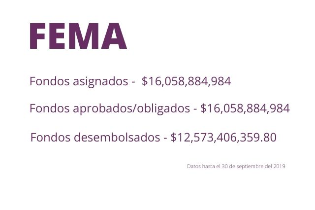
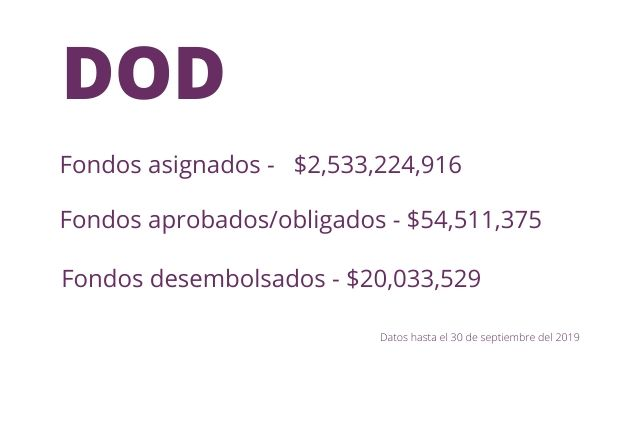
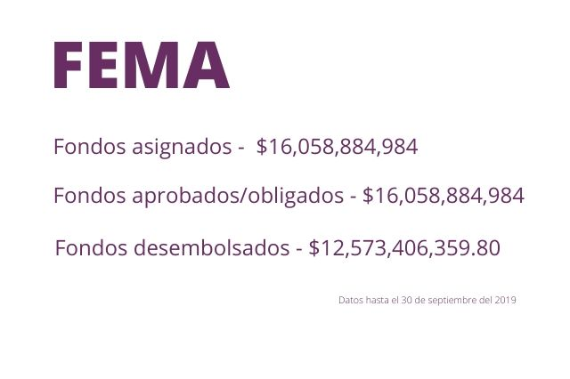
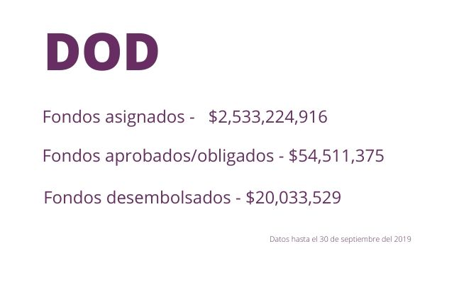
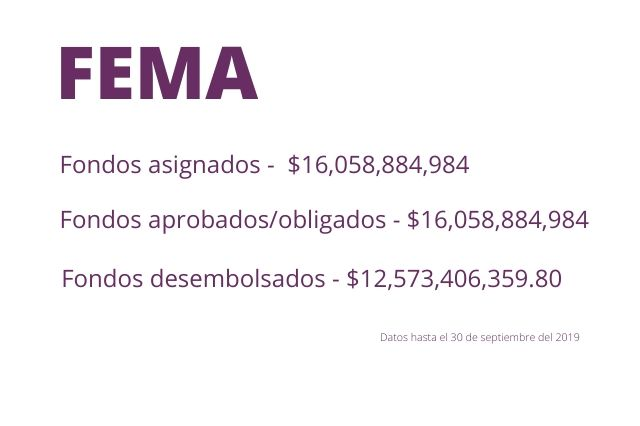
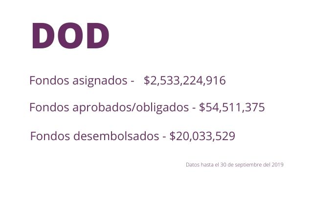

Las periodistas Vanessa E. Colón Almenas y Brenda León elaboraron el proyecto “Un vistazo después de María” como parte del cumplimiento de los requisitos de la maestría del programa de Periodismo en Español de la Escuela Graduada de Periodismo de Craig Newmark de la Universidad de la Ciudad de Nueva York (CUNY). Las fuentes de estos datos provienen del sitio RSFLG, de Fondos CDBG-DR de Puerto Rico, comunicados de prensa enviados por el gobierno de Puerto Rico y la Administración Nacional Oceánica y Atmosférica.
Exsubsecretaria de HUD trabaja en empresa contratada para la recuperación en Puerto Rico Pamela H. Patenaude ayudó a conseguir una cantidad récord de fondos de recuperación para la isla. Tras su renuncia del Departamento de Vivienda federal, se fue a laborar con la compañía IEM, la cual obtuvo un contrato millonario con la primera asignación de ese dinero que ella misma gestionó.
por Vanessa Colón Almenas y Brenda León
Cuando Pamela H. Patenaude anunció su salida como subsecretaria del Departamento de Vivienda y Desarrollo Urbano de Estados Unidos (HUD, en inglés) el 17 de diciembre del 2018, el entonces secretario del Departamento de la Vivienda (DV) de Puerto Rico, Fernando Gil Enseñat, y varios funcionarios locales lo lamentaron públicamente.
Patenaude, quien fuera segunda en mando después del secretario Ben Carson, fue una importante aliada de la isla después del desastre de los huracanes Irma y María en septiembre del 2017. Por su gestión, aumentó la asignación de fondos de $11 mil millones a $20 mil millones a través de la Subvención en Bloque para el Desarrollo Comunitario – Recuperación ante Desastres (CDBG-DR, en inglés).
Según The Washington Post , la exfuncionaria federal abogó por Puerto Rico en el proceso de acceso a la primera asignación de $1.5 mil millones de estos fondos, cuyo anuncio de disponibilidad se hizo en diciembre del 2018.
Tres meses después de su salida de HUD, en marzo del 2019, Patenaude fue nombrada Senior Community Liaison en la compañía Innovative Emergency Management (IEM), la cual firmó un contrato de $22.2 millones el 15 de julio del 2019, con el Departamento de la Vivienda de Puerto Rico con fondos de la primera asignación de CDBG-DR.
“Espero servir en este importante rol de asesora y ayudar a facilitar los esfuerzos de recuperación a largo plazo en todo el país (Estados Unidos), incluyendo comunidades que aún se recuperan de desastres recientes en Puerto Rico, Carolina del Norte y Texas”, expuso Patenaude en un comunicado de prensa publicado en la página web de IEM relacionada a asuntos de Puerto Rico.
Al preguntarle a IEM sobre el posible conflicto de interés y cómo se había manejado esta contratación.
Stephanie Tennyson, directora de comunicaciones de IEM, dijo que, distinto a lo que había anunciado la exfuncionaria, Patenaude no está involucrada en el trabajo del día a día ni con la gestión de los contratos en Puerto Rico y en otros lugares.
“Tampoco fue parte del proceso para adquirir el contrato ni estuvo asociada con ningún desembolso de fondos de recuperación de Puerto Rico”, añadió.
El escrito de la página web de IEM especifica que Patenaude trabajaría como asesora sénior en los proyectos de vivienda y recuperación de desastres. Tennyson, por su parte, reconoció que la exfuncionaria federal sí es consultora de IEM y que asesora a los altos ejecutivos de la firma en “buenas prácticas”, pero no brindó más detalles.
Tennyson hizo énfasis en que “Patenaude consultó – y continuará consultando – con abogados privados y de la división legal del Departamento de Ética de HUD para asegurarse de que va más allá de lo que exige la ley, el reglamento y la Orden Ejecutiva” con relación a las restricciones que le aplican después de haber culminado su rol como subsecretaria de HUD.
Patenaude laboraría junto a las personas interesadas, representantes electos, funcionarios de agencias estatales y sobrevivientes de los desastres en buscar soluciones de vivienda, según la página web de la IEM.
La Oficina de Ética Gubernamental (OGE, en inglés) en Estados Unidos generalmente prohíbe a exempleados de alto nivel tener contacto con empleados de su antiguo trabajo a nombre de otra persona o entidad, con relación a cualquier asunto oficial. Podría, igual, prohibirles que tengan contacto con ciertos oficiales de otras agencias.
Tennyson añadió que IEM se asegura de “cumplir con las regulaciones éticas que le apliquen en contrataciones, incluyendo la de Patenaude”.
IEM resaltó que Patenaude cuenta con más de 37 años de experiencia en el servicio público y manejo de organizaciones sin fines de lucro. En Estados Unidos, es reconocida como experta en el campo de la vivienda y la recuperación de desastres.
Gil Enseñat dice que no sabía que Patenaude trabajaba para IEM
En Puerto Rico, los fondos CDBG-DR – destinados a asistir en caso de desastre a la recuperación a largo plazo, en las áreas de vivienda, restauración de la infraestructura y la revitalización económica – son administrados por Vivienda. Hasta el pasado 19 de enero Gil Enseñat fue el secretario de Vivienda y principal portavoz del manejo de estos fondos.
Gil Enseñat aseguró que no tenía conocimiento de que Patenaude ahora trabaja con IEM. El exfuncionario reconoció que mantenía una relación de amistad con ella.
“Yo sí he hablado con ella, pero su contacto conmigo no ha sido referente a nada de trabajo. Es más personal”, señaló Gil Enseñat a finales de noviembre pasado.
Cuando la exsubsecretaria de HUD anunció su renuncia, él ensalzó en un tuit su figura “como amiga, madre, esposa y funcionaria pública”. Expresó que los puertorriqueños siempre “estarán en deuda” por su “sincero esfuerzo” para ayudar en la reconstrucción de la isla.
“Si es un contrato que ella tiene con un ente privado, ella debe conocer obviamente sus leyes éticas”, dijo Gil Enseñat.
Al cierre de esta edición se intentó comunicarse con Patenaude sin éxito.
IEM y otras tres compañías ganaron la subasta con Vivienda por tres años como gerentes de los programas “Asesoría de Vivienda” y “Reparación, Reconstrucción o Reubicación” (R3), además de apoyar al DV en la administración y ejecución de los mismos. El programa R3 reparará viviendas que fueron afectadas significativamente por los huracanes. La cantidad máxima en reparaciones para cada casa es de $60 mil. Para la reconstrucción o reubicación se adjudicará hasta un máximo de $185 mil, dependiendo del tamaño de la vivienda.
En noviembre del 2018, IEM sometió su propuesta con la que obtuvo el contrato para trabajar en la región de Mayagüez.
Las otras compañías beneficiadas por esta subvención son Alliance for the Recovery of Puerto Rico ($22.6 millones), ICF Incorporated, LLC ($25 millones) y Aecom Technical Services ($22.2 millones).
Al cuestionarle a HUD si Patenaude obtuvo una dispensa ética ante estas circunstancias, el funcionario de la oficina de Asuntos Públicos, Jereon M. Brown, dijo en declaraciones escritas que “todos los empleados están informados sobre las reglas de la Oficina de Ética Gubernamental de EE.UU. después de que dejan el trabajo en HUD, además de que están sujetos a ellas”. Evadió contestar si la exfuncionaria recibió el visto bueno para ser contratada por la compañía IEM.
A un exempleado federal se le puede prohibir “que acepte una compensación de un contratista si el exempleado desempeñó un cargo en el Gobierno o tomó una decisión gubernamental que involucre más de $10,000,000 entregados a ese contratista”.
Brown dijo que HUD no participa en la selección y otorgación de contratos de sus beneficiarios. En este caso, el beneficiario es el Gobierno de Puerto Rico, que ha delegado la función de administrar los fondos CDBG-DR a Vivienda.
A su vez Vivienda contrató los servicios de la compañía IEM, que ya había contratado a Patenaude.
HUD revisa las políticas de contratación de Vivienda para determinar si son competentes, según Brown. Vivienda es la agencia responsable de seleccionar y supervisar los contratos en los que se utilizan los fondos CDBG-DR. Además, debe mantener una página web pública con todos los contratos y compras en los que se utilicen estos fondos.
El último informe financiero de Patenaude a Ética Gubernamental cumplió con los reglamentos y leyes aplicables, según determinaron tres oficiales en febrero del 2019.
La renuncia de la funcionaria fue efectiva el 17 de enero del 2019.
Según la comisionada residente Jenniffer González, Patenaude ayudó a “derribar barreras administrativas” para que Puerto Rico recibiera los primeros fondos CDBG-DR. En varias ocasiones, González la describió como la “champion” más importante con la que contaba el País en HUD.
En su tercera visita a la isla, en febrero del 2018, tras los huracanes Irma y María, Patenaude anunció el acceso a los primeros fondos CDBG-DR en una conferencia de prensa en La Fortaleza, junto al entonces gobernante Ricardo Rosselló y la Comisionada residente.
Dos meses después, llegó hasta el barrio San Isidro, en Canóvanas. Rodeada de casas techadas con toldos azules y un séquito más abultado de funcionarios, anunció la cifra récord de $18.5 mil millones en fondos de recuperación.
Luego, en el primer aniversario del huracán María, el secretario Ben Carson y Rosselló firmaron el acuerdo final para tener acceso a esos fondos. Patenaude estuvo presente en la firma junto a la Comisionada residente y Gil Enseñat.
González y Gil Enseñat han dicho que Patenaude visitó el país más de 10 veces. Según información pública recopilada, estuvo al menos siete veces. Se reunió con empleados de la oficina de HUD en Puerto Rico, además de alcaldes, organizaciones sin fines de lucro, personal del Banco Popular y en repetidas ocasiones con representantes de la industria de la vivienda. Se tomó fotos en el muelle de Humacao y en un colmado en Santurce con un plato de alcapurrias, las conocidas frituras de la gastronomía puertorriqueña.
Fue oradora en las convenciones de la Asociación de Banqueros Hipotecarios y la Asociación de Constructores de Puerto Rico y en una actividad de la National Association of Hispanic Real Estate Professionals.
“Quiero ser recordada como una defensora de Puerto Rico, como la persona que luchó por ello", dijo en una charla que dio en la Universidad de Princeton, en Nueva Jersey, después de su salida de HUD.
Han pasado más de dos años del paso del huracán María por la isla y todavía más de 20,000 familias viven bajo la sombra de un toldo azul en sus casas. El panorama ha empeorado tras los temblores que se suscitan en la isla desde el 28 de diciembre del 2019.
El 1ro de febrero de 2020 se cumplieron dos años desde que se anunciaron los $1.5 mil millones en fondos CDBG-DR por primera vez. Solo se han gastado casi $11 millones, según datos de HUD hasta diciembre del 2019, lo que representa casi un 1%. Al programa “Reparación, Reconstrucción o Reubicación”, se le asignaron $826 millones de los cuales $6 millones (casi 1%) se encuentran bajo el renglón de “program fund drawn”, o sea, que ya han sido transferidos del Departamento del Tesoro a las cuentas bancarias del Gobierno de Puerto Rico.
6 de septiembre del 2017 - El huracán Irma llegó a Puerto Rico como categoría 5 con vientos de más de 100 millas por hora.
20 de septiembre del 2017 - Dos semanas después, el huracán María atravesó la Isla como categoría 4. Tuvo vientos récord de 155 millas por hora, desbordamientos de ríos, deslizamientos de tierra, e inundaciones catastróficas que llegaron hasta las 38 pulgadas.
1ro de febrero del 2018 - El Departamento de Vivienda y Desarrollo Urbano de los Estados Unidos (HUD) otorgó $1,500 millones para ayudar a Puerto Rico a recuperarse de los huracanes Irma y María. La entonces subsecretaria de HUD Pamela Hughes Patenaude anunció los subsidios de recuperación de desastres con el gobernador Rosselló, durante su tercera visita a Puerto Rico después de los huracanes Irma y María.
Se comenzó la elaboración del Plan de Acción para poder accesar a esos fondos.
10 de abril del 2018 - HUD otorgó la suma récord de $18,500 millones para apoyar la recuperación a largo plazo de Puerto Rico. Patenaude anunció los subsidios de recuperación de desastre junto al entonces gobernador Ricardo Rosselló y la congresista Jenniffer González-Colón.
27 de abril del 2018 - El gobierno de Puerto Rico anunció que presentará un Plan de Acción para el uso de los fondos CDBG-DR, así como el envío de informes semanales a HUD.
En una visita a Washington, Rosselló se reunió con el secretario de HUD, Ben Carson, y Patenaude, quien "enfatizó en que el Plan para utilizar los fondos es tarea exclusiva del gobierno de Puerto Rico según las necesidades de la Isla. La función del Gobierno federal será de asesoría", consignó comunicado de prensa de La Fortaleza.
7 de mayo del 2018 - Rosselló presentó el borrador del Plan de Acción necesario para utilizar la primera subvención de los $1,500 millones en fondos CDBG-DR.
30 de julio del 2018 - HUD aprobó el Plan de Acción sometido por el Departamento de la Vivienda de Puerto Rico, que consta de 19 programas.
20 de agosto del 2018 - La notificación de la asignación de $8,220,783,000 en fondos CDBG-DR para Puerto Rico se publicó en el registro federal. Vivienda comienza elaboración para enmienda sustancial al Plan de Acción.
20 de septiembre del 2018 - El secretario de HUD y el entonces gobernador firmaron el “grant agreement” de los $1,500 millones. La exsubsecretaria de HUD, el entonces secretario de Vivienda, Fernando Gil-Enseñat y la comisionada residente González Colón estuvieron presentes.
28 de noviembre del 2018 - Rosselló anunció la firma de un acuerdo interangencial entre el Departamento de la Vivienda y el Departamento de Desarrollo Económico y Comercio (DDEC) para facilitar el proceso de manejo y utilización de los fondos CDBG-DR.
12 de diciembre del 2018 - El periódico El Nuevo Día publicó una historia en la que un funcionario federal establece que Puerto Rico no está preparado para recibir los fondos CDBG-DR.
17 de diciembre del 2018 - Pamela Hughes Patenaude anunció su renuncia al cargo de subsecretaria de HUD en Estados Unidos. Muchos funcionarios de Puerto Rico lo lamentaron.
18 de diciembre del 2018 - Rosselló notificó que HUD autorizó el uso de la primera subvención de los fondos CDBG-DR. La confirmación para el uso de fondos se dio durante una conversación el día anterior entre el primer ejecutivo y la entonces subsecretaria de HUD.
13 de enero del 2019 - Rosselló anunció la firma de un acuerdo entre Vivienda y la organización Foundation for Puerto Rico (FPR) para iniciar la administración del Programa de Planificación de Resiliencia Comunitaria por medio de los fondos CDBG-DR.
2 de febrero del 2019 - HUD autorizó el desembolso y el uso del dinero aprobado a través del primer Plan de Acción para los fondos CDBG-DR.
6 de febrero del 2019 - El secretario de HUD, Carson, recibió en Washington al gobernador con el fin de discutir los próximos pasos para el desembolso de fondos CDBG-DR; esto incluye los primeros $1,500 millones en fondos que HUD aprobó recientemente.
El secretario de Vivienda, Gil-Enseñat, estuvo presente con el primer mandatario durante la reunión.
13 de febrero del 2019 - Rosselló anunció que HUD aprobó unas exenciones para el uso de los fondos CDBG-DR en Puerto Rico, que incluyen $10 millones para mercadeo de turismo y mercadeo de negocios. Las demás exenciones están dirigidas a los temas de construcción e hipotecas.
28 de febrero del 2019 - HUD aprobó la primera enmienda substancial al Plan de Acción del gobierno de Puerto Rico de $8.22 mil millones destinados a vivienda, desarrollo económico, infraestructura, revitalización de las comunidades y planificación.
El acuerdo materializa que HUD aceptó y está de acuerdo en que se ejecuten los trabajos incluidos en el Plan de Acción, con ajustes menores. El próximo paso es culminar el ajuste del sistema financiero de los proyectos, según las cláusulas establecidas por HUD.
Se estima que la recuperación de Puerto Rico dure más de 17 años. El panorama ha empeorado tras los temblores que se suscitan en la isla desde el 28 de diciembre del 2019.
La Administración Nacional Oceánica y Atmosférica (A, por sus siglas en inglés) registró que los vientos de María alcanzaron hasta 155 mph en la ciudad de San Juan. Las condiciones de tormenta fueron tan extremas que los sistemas
de observación de superficie de las estaciones terrestres a través de la isla se sobrecargaron y fallaron durante el evento atmosférico. Los vientos y la lluvia causaron que colapsaran viviendas y estructuras debilitadas, arrancaron
árboles y derribaron el tendido eléctrico en todo el territorio, lo que provocó un apagón total.
Dale clic a la imagen.

Escribe tu ingreso individual (no incluyas el símbolo de $):

